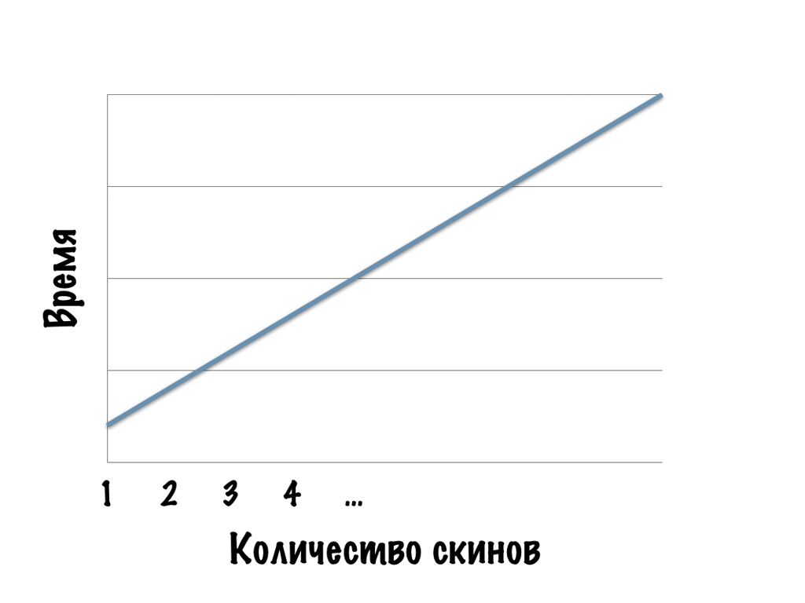
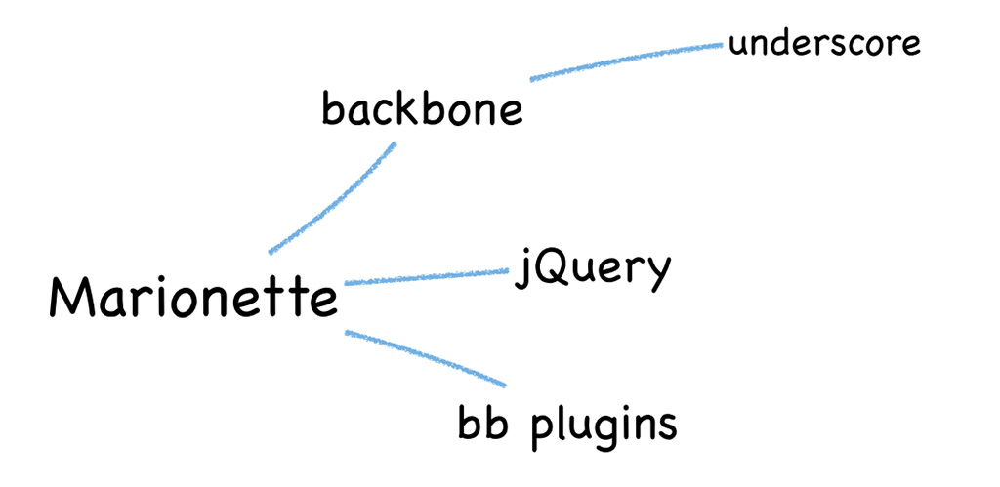
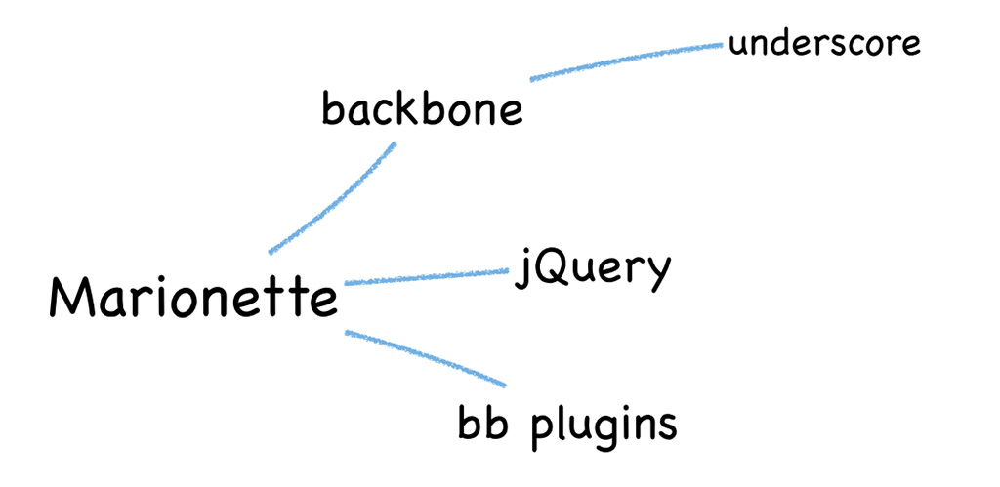

Автоматизация ☠ или смерть!
РИТ Санкт-Петербург
24—25 апреля 2014
- Антон Еремеев
- Артём Пархоменко
Источники смертельной опасности
- HTML
- CSS
- Организация кода
- Управление зависимостями
- Тестирование
☠ HTML ☠
«Полуфункциональные» прототипы
- Короче цикл внесения изменений
- Отвязка от технологии
- Не нужен сервер
Проблемы статического HTML
- Надо поддерживать много файлов
- Сложно найти место, где править
- Сложно править таблицы и списки
Проблемы статического HTML
Надо поддерживать много файлов- Сложно найти место, где править
- Сложно править таблицы и списки
Проблемы статического HTML
Надо поддерживать много файловСложно найти место, где править- Сложно править таблицы и списки
Проблемы статического HTML
Надо поддерживать много файловСложно найти место, где правитьСложно править таблицы и списки
Бонусы Assemble
- Удобная конфигурация +
postprocess - Огромная библиотека хелперов
- Возможность писать свои хелперы
Все довольны


☠ CSS ☠
Проблемы CSS
- Постоянные повторения в селекторах
- Отсутствие конфигурации
- Префиксы
Обычно упоминают
- Вложенность селекторов
- Переменные
- Миксины
- Префиксы
Циклы
.columns {
&--column {
float: left;
&-1_2 {
width: 50%;
}
&-1_3 {
width: (100% / 3);
}
&-2_3 {
width: (100% / 3) * 2;
}
&-1_4 {
width: 25%;
}
&-2_4 {
@extend .columns--column-1_2;
}
&-3_4 {
width: 75%;
}
&-1_5 {
width: 20%;
}
&-2_5 {
width: 40%;
}
&-3_5 {
width: 60%;
}
&-4_5 {
width: 80%;
}
}
}.columns {
&--column {
for $colsTotal in (2 3 4 5 6 8 10 12 20) {
for $col in (1...$colsTotal) {
&-{$col}_{$colsTotal} {
width: $col * (100% / $colsTotal);
}
}
}
}
}Параметризация
$columnsAvailable ?= (2 3 4 5 6 8 10 12 20);
$columnsGap ?= 20px;
.columns {
&--column {
padding-left: $columnsGap;
for $colsTotal in $columnsAvailable {
for $col in (1...$colsTotal) {
&-{$col}_{$colsTotal} {
width: $col * (100% / $colsTotal);
}
}
}
}
}☠ Организация кода ☠
Выбор файловой структуры
- идеология
- специфика
- (БЭМ)
- (мультискиннинг)



создание новых блоков – медленнее
Скаффолдер

Yo
Yo
- механизм запуска генерации
- логирование
- взаимодействие с пользователем
- процессинг файлов
Скаффолдинг скаффолдеров
$ yo dx someBlock

$ yo dx someBlock

☠ Управление зависимостями ☠
Подключаем jQuery
Подключаем Marionette

 

bower

Добавление зависимостей
bower.json
{
"name": "project",
"dependencies": {
"selectbox": "#1.1.0",
"combobox": "#1.0.1",
"scrollable": "#2.0.8"
}
}CLI
$ bower install jquery --save

Что переиспользовать?
Что тестировать?
Dev-зависимости
- styl файлы
- кусочки верстки
- хелперы
- демо данные
Prod-зависимости
(внешние и внутренние)
- библиотеки
- контролы
- виджеты
Источники зависимостей
- bower-registry
- git-репозиторий
- прямая ссылка на файл
- прямая ссылка на архив
- svn-репозиторий
☠ Тестирование ☠
Что переиспользовать?
Что тестировать?
Dev-зависимости
- styl файлы
- кусочки верстки
- хелперы
Prod-зависимости
(внешние и внутренние)
- библиотеки
- контролы
- виджеты

Unit-тесты в браузере
- создать spec файл
- подключить тесты/фреймворки
- открываем все целевые браузеры
-

Такой TDD нам не нужен

karma.conf.js
module.exports = function(config) {
config.set({
basePath: '',
frameworks: ['jasmine'],
files: [
'src/dx.*.js',
'test/dx.*.unit.spec.js'
],
browsers: ['PhantomJS', 'Chrome']
});
};Karma
- запуск браузеров
- любой тестовый фреймворк
- препроцессинг любой сложности
- file watchers
- скорость
Пользовательские события
это тоже API
ng-scenario
- легко настроить
- совместим с Karma
- строгое API
- расширяемое API
Тестируем scrollbar
it('should scroll when bar dragged', function() {
mouseDown('.scrollbar-vertical .scrollbar--bar', {
clientY: 20,
bubbles: true
});
mouseMove('body', {
clientY: 76,
bubbles: true
});
mouseUp('body', {
clientY: 1000,
bubbles: true
});
expect(element('.foo').scrollTop()).toBe(100);
});ТЕСТИРУЙ!
☠ Инструменты ☠
Это ещё не всё!
- JSHint, JSCS, CSSLint
- конкатенация, минификация
- создание спрайтов, оптимизация изображений
- запуск локального дев-сервера
- релиз новой версии
- …
package.json/scripts
installtestbuildrelease
> npm install
> npm run build